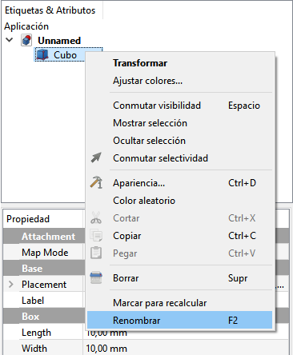
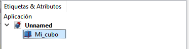
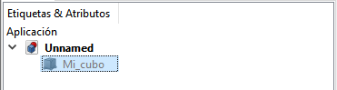
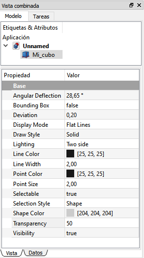
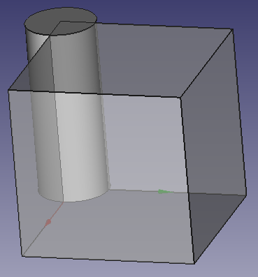

2. Parts display¶
In this tutorial we are going to change the display properties of a part in three dimensions.
We open the FreeCAD application that has the following icon.

Then we click on the icon to create a new document
 or we select in the menu
or we select in the menu File... New.A new tab will open with an empty document, where we can start designing.
We select the Part workbench to start designing objects in 3 dimensions.

Now we create a cube by clicking the first icon on the solid object bar.

We change the name of the cube by clicking with the right mouse button and selecting rename or by clicking with the left mouse button and pressing the F2 key.
Change the name "Cube" to the new name "My_cube"
Now, when you press the space key the cube will disappear. If we press the space key again the cube will reappear on the screen.
When the cube is invisible, its name changes to a gray color.
With this function we can see the hidden pieces that are behind a solid object.
Another way to be able to see inside a piece and see through it, is to change the transparency property, for example, to 50%.
The Transparency property is on the View tab.
If we now add a Cylinder to the design, we will be able to see the new part through the cube.
In addition to transparency, in the View tab you can change other properties such as
the color of the faces of the piece (Shape Color),
the color of the edges (Line Color),
and the color of the vertices (Point Color).
A useful property is to change the size of the points (Point Size) to make it easier to select them.
Note
To update the image of the part on the screen, press the function key F5 or in the Menu Edit... Update screen.
Exercises¶
Open FreeCAD and create a new document with a cube and a cylinder. Change the properties of the cube to make it 50% transparent with faces colored blue and edges colored yellow.

Video-tutorial¶
Video: Display properties.